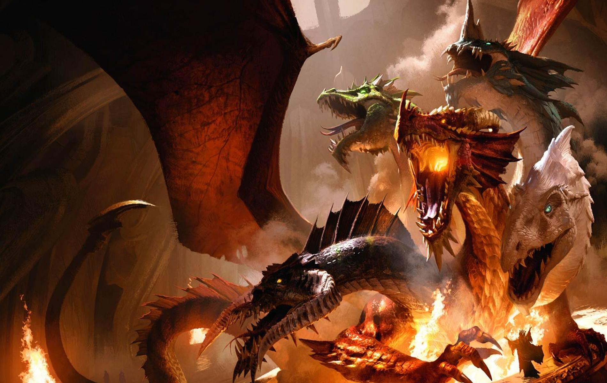

JOKER D&D: Character Creation Tips
HomePage
About the Dm

Tiamat, Queen of Dragons - Michael Komarck
Character Creation Video Tips
Starter Kit: D&D 5e
Helpful Links for New Players
Spells
Weapons
Armor
Equipment